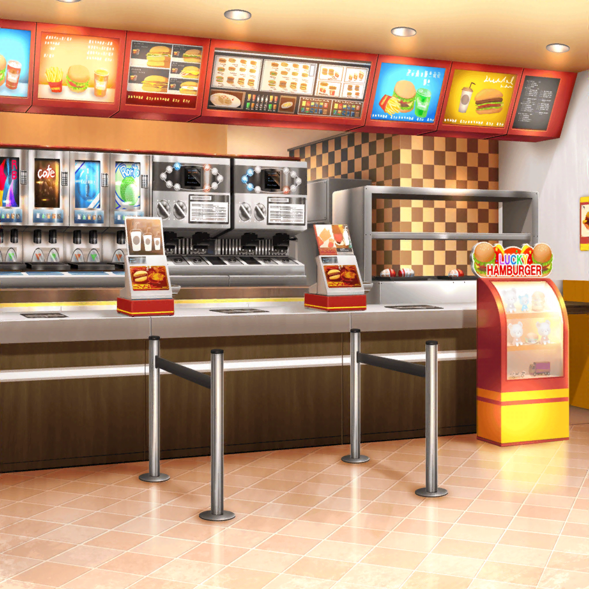

ファーストフード店
香澄
わわっ！ {{userName}}さんじゃん！
こんにちは～っ！
香澄
ひょっとしてCiRCLEのお仕事、サボっちゃってたり……？
香澄
……ははは！ ごめんなさーい！ そんなわけ、ないよね～！
香澄
あ！ そうそう、この前のクリスマスライブの話ってしたっけ？
香澄
……え？ してない！？
やったー！ やっと話をしてない人、はっけーん！
香澄
もう、みんなに話しちゃって、誰に話そうか探してたんだー！
良かった{{userName}}さんとここで会えて！
香澄
この前のクリスマスライブ、もう大成功だったんだよ！
まりなさんにも、話聞いたでしょ！？
香澄
何ていうか、いつの間にかあんなに友達が増えてたんだな～って
すっごい実感しちゃった！
香澄
でね！ クリスマスライブの準備してる時……
香澄
ポピパのみんなが私にお礼を言ってくれたんだよ！
私が、CiRCLEに突撃したのが良かったって！
香澄
あの有咲まで、言ってくれるんだもん。
私、本当にびっくりしちゃったよ……
香澄
……あ、ヤバい。
今、思い出しても、ちょっと泣けてきちゃうかも……
香澄
私、あの日のことは一生忘れないなー……
香澄
有咲は、忘れろ、とか言ってたけどね！
あははは……
香澄
……けどね？
あのあと私、考えたんだっ！
香澄
みんなが仲良くなれたのって、別に私の力じゃない……
香澄
みんなが仲良くなれたのは、きっと……
音楽の力なんじゃないかなってっ！
香澄
……音楽って、本当にすごいよね！？
キラキラドキドキが次から次へとやってくるんだもん！
香澄
それじゃあ、みんなを代表して……
香澄
音楽の神様～！
楽しい時間を、本当にありがとうございました～っ♪